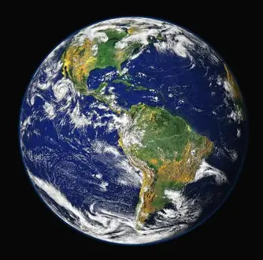
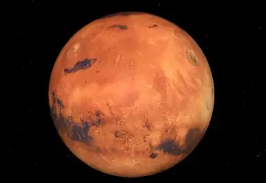
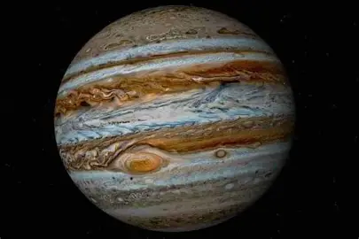
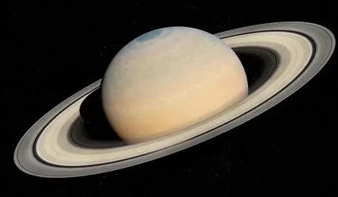
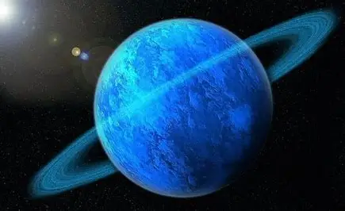
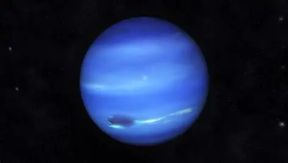
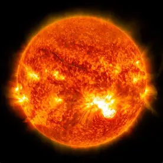

<!DOCTYPE html>
<html lang="en">
<head>
    <meta charset="UTF-8">
    <meta name="viewport" content="width=device-width, initial-scale=1.0">
    <link rel="stylesheet" href="../css/general.css">
    <link rel="stylesheet" href="../css/planetas.css">
    <title>Planetas</title>
</html>
<body>
    <nav class="menu-navegacion">
        <ul class="menu">
            <li class="Via Lactea"><a href="../index.html">Via Lactea</a></li>
            <li class="sistema solar"><a href="sistemaSolar.html">Sistema Solar</a></li>
            <li class="planetas"><a href="planetas.html">Sistema Planetario</a></li>
            <li class="nasa"><a href="nasa.html">Nasa</a></li>
        </ul>
    </nav>
    <h1>Planetas del Sistema Solar</h1>
    <div class="sistemaSolarContenido" id="sistem">
        
        <map name="planet">
            <area shape="rect" coords="400,170,290,280" alt="Tierra" href="#tierra">
            <area shape="circle" coords="25,200,60" alt="Sol" href="#Sol">
            <area shape="rect" coords="360,100,550,150" alt="Júpiter" href="#jupiter">
        </map>
        <p>
            Según la Unión Astronómica Internacional, un planeta es un objeto celeste que orbita alrededor de un Sol, tiene forma esférica y no comparte su órbita con otros objetos similares.
        </p>
        <table class="tablaPlanetas">
            <th>Imagen</th>
            <th>Planeta</th>
            <th>Diámetro (km)</th>
            <th>Número de Satélites</th>
            <th>Tiempo de Rotacion</th>
            <th>Tiempo de Traslación</th>
            <tr class="mercurio" >
                <td></td>
                <td>Mercurio</td>
                <td>4,879</td>
                <td>0</td>
                <td>58.6 días</td>
                <td>88 días</td>
            </tr>
            <tr class="venus">
                <td></td>
                <td>Venus</td>
                <td>12,104</td>
                <td>0</td>
                <td>243 días</td>
                <td>225 días</td>
            </tr>
            <tr id="tierra" class="tierra">
                <td></td>
                <td>Tierra</td>
                <td>12,742</td>
                <td>1</td>
                <td>24 horas</td>
                <td>365.25 días</td>
            </tr>
            <tr class="marte">
                <td></td>
                <td>Marte</td>
                <td>6,779</td>
                <td>2</td>
                <td>24.6 horas</td>
                <td>687 días</td>
            </tr>
            <tr class="jupiter" id="jupiter">
                <td></td>
                <td>Júpiter</td>
                <td>139,820</td>
                <td>79</td>
                <td>9.9 horas</td>
                <td>11.86 años</td>
            </tr>
            <tr class="saturno">
                <td></td>
                <td>Saturno</td>
                <td>116,460</td>
                <td>83</td>
                <td>10.7 horas</td>
                <td>29.46 años</td>
            </tr>
            <tr class="urano">
                <td></td>
                <td>Urano</td>
                <td>50,724</td>
                <td>27</td>
                <td>17.2 horas</td>
                <td>84 años</td>
            </tr>
            <tr class="neptuno">
                <td></td>
                <td>Neptuno</td>
                <td>49,244</td>
                <td>14</td>
                <td>16.1 horas</td>
                <td>164.8 años</td>
        </table>
        <p> Si quieres saber mas sobre los planetas da click Aqui: <a class="pdf" href="../Documento/Planetas.pdf">Planetas</a></p>
    </div>
    <div class="ElSol" id="Sol">    
        <h2>El Sol</h2>
        <marquee  >
            
        </marquee>
        <p>
            El Sol es la estrella en el centro del sistema solar. Es una esfera casi perfecta de plasma caliente, con una ligera protuberancia en el ecuador. Está compuesto principalmente de hidrógeno (aproximadamente 74% de su masa) y helio (aproximadamente 24% de su masa), con cantidades mucho más pequeñas de elementos más pesados, como oxígeno, carbono, neón y hierro.
            El Sol es una estrella de secuencia principal de tipo espectral G2V (una "enana amarilla") basada en su temperatura superficial y en la luminosidad que emite. Tiene un diámetro de aproximadamente 1.39 millones de kilómetros, o 109 veces el diámetro de la Tierra, y su masa es aproximadamente 330.000 veces la masa de la Tierra, lo que representa aproximadamente el 99,86% de la masa total del sistema solar.
            La luz y el calor que emite el Sol sustentan casi toda la vida en la Tierra a través del proceso de fotosíntesis y controlan el clima y el tiempo atmosférico. El Sol también influye en las condiciones espaciales dentro del sistema solar mediante el viento solar, una corriente continua de partículas cargadas que emanan del Sol.
        </p>
    </div>
</body>
</html>